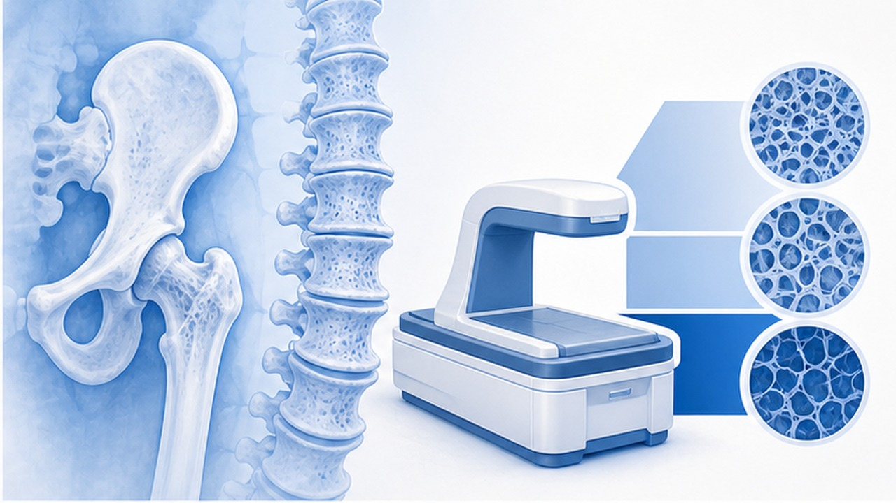
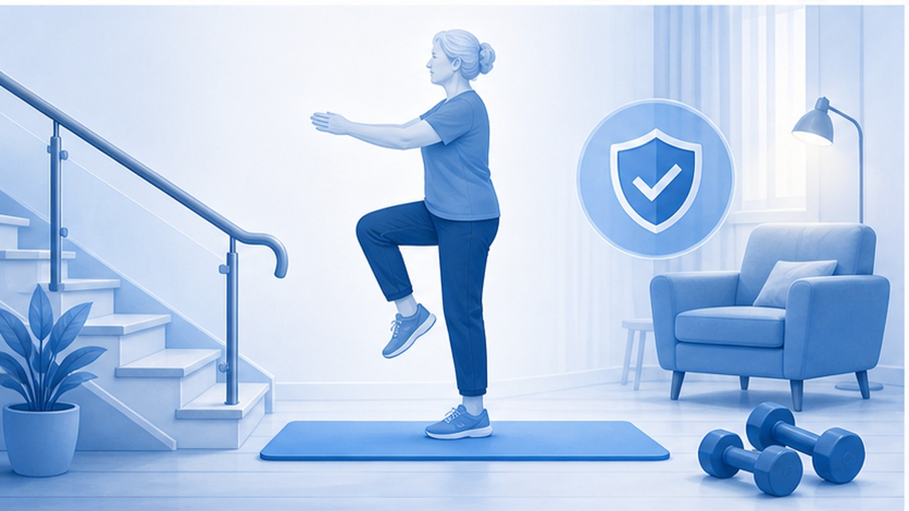
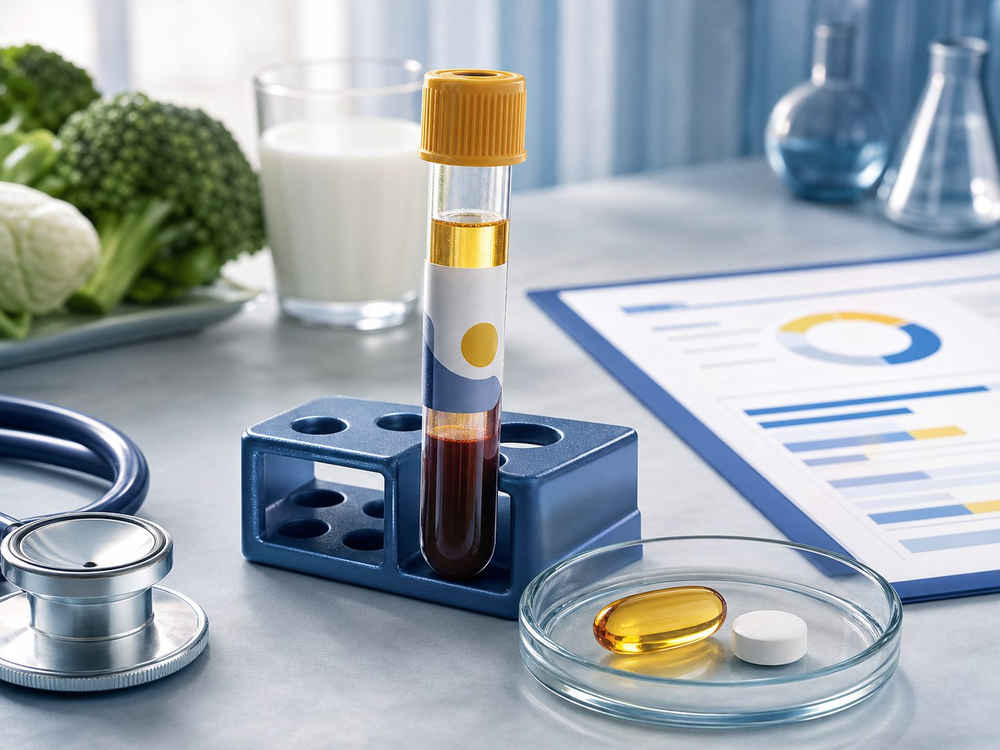

PAPER REVIEW · GERIATRICS · PREVENTIVE MEDICINE
칼슘·비타민 D 보충제,
일괄 처방을 멈춰야 할 때
BMJ 2026.05 systematic review & meta-analysis — 69 RCT, 153,902명. 일반 성인·지역사회 고령자에서 골절·낙상 예방 효과는 임상적으로 미미.
CHAPTER 01 · TL;DR
한 문단·세 숫자로 요약
보충제 자동 권고보다 결핍 확인, 식이 평가, 낙상 예방이 먼저다.
TRIALS
69 RCT
칼슘·비타민 D·병합 보충제를 placebo/no treatment와 비교.
PARTICIPANTS
153,902명
대부분 일반 성인·지역사회 거주 고령자 근거가 중심.
EFFECT
Little / none
골절·낙상 예방 효과가 대부분 임상적으로 의미 있게 보이지 않음.
진료실 메시지 — '뼈에 좋으니 일단 드세요'가 아니라, 결핍·식이 부족·골다공증 치료 동반 여부를 확인한 뒤 처방한다.
CHAPTER 02 · WHY REASSESS
왜 다시 봐야 하나
외래에서 보충제는 흔하지만, 환자가 기대하는 효과는 과장되어 있다.
기존 관행
- 50대 이상이면 칼슘·비타민 D를 자동 권고
- 골절 예방과 낙상 예방을 한 묶음으로 설명
- 검사 없이 복용 시작 후 장기 지속
- 골다공증 약과 보충제 권고가 혼재
문제점
- 결핍군과 비결핍군이 섞여 근거 해석이 흐림
- 낙상은 근력·균형·약물·환경 요인이 더 큼
- 보충제 복용이 운동·식이 개입을 대체할 수 있음
- 신장결석·위장관 불편 등 부담도 존재
CHAPTER 03 · EVIDENCE MAP
무엇을 비교했나
칼슘 단독, 비타민 D 단독, 병합요법을 분리해 보았다.
01
Calcium alone
칼슘 단독 보충이 전체 골절·고관절 골절을 의미 있게 줄인다는 근거는 약함.
02
Vitamin D alone
비결핍 일반 성인에서 낙상·골절 예방 효과가 일관되지 않음.
03
Calcium + Vitamin D
병합도 대부분 결과에서 little to no effect. 특정 고위험군 가능성은 별도.
04
Community-dwelling
지역사회 거주 일반 고령자에서는 자동 보충 이득이 작음.
05
Institutional / deficient
요양시설, 영양불량, 심한 결핍은 일반화 금지. 개별 평가.
06
Falls
낙상은 보충제보다 근력, 균형, 시야, 약물 조정, 환경 개선이 핵심.
CHAPTER 04 · WHO STILL NEEDS
그래도 보충제가 필요한 경우
결론은 '전면 금지'가 아니라 '무차별 권고 중단'이다.
환자군
칼슘
비타민 D
실무 포인트
명확한 결핍
식이 우선+필요시
보충 적응
25(OH)D, 식이 섭취, 원인 평가
요양시설/영양불량
고려
고려
일반 community-dwelling 근거와 분리
골다공증 약 복용
권장 섭취량 확보
권장 섭취량 확보
약물 RCT의 보조요법 맥락
비결핍 일반 고령자
자동 권고 X
자동 권고 X
식이·운동·낙상 예방 우선
신장결석/CKD
주의
개별화
칼슘·인·PTH·약물 상호작용 확인

CHAPTER 05 · ASSESS FIRST
처방 전 4단계 평가
보충제보다 먼저 환자의 실제 위험을 분해한다.
01
Fracture risk
FRAX, 골절력, DEXA, 스테로이드, 부모 고관절골절.
02
Diet
유제품·두부·멸치·채소 등 식이 칼슘 섭취량 추정.
03
Vitamin D
결핍 위험, 햇빛 노출, 25(OH)D 측정 필요성 판단.
04
Fall risk
근력, 균형, 시야, 수면제/벤조/항고혈압제, 집안 환경.
CHAPTER 06 · WHAT WORKS BETTER
골절·낙상 예방의 우선순위
낙상을 줄이는 개입은 보충제보다 행동과 환경에 가깝다.
01
저항운동
하지 근력과 균형을 높이는 운동. 주 2-3회가 실질적 낙상 예방.
02
균형훈련
한발서기, 보행훈련, Tai chi 등. 낙상 공포까지 줄인다.
03
약물 정리
수면제, 벤조디아제핀, 항콜린제, 과도한 혈압약 조정.
04
시력·발
백내장, 다초점렌즈, 발 변형·신발 문제 확인.
05
환경
러그, 욕실, 조명, 문턱, 계단 손잡이. 집에서 넘어지는 것을 줄인다.
06
골다공증 치료
고위험군은 보충제가 아니라 항골흡수/골형성 약물 평가가 핵심.

CHAPTER 07 · COUNSELING
환자 상담 문장
이미 복용 중인 환자에게는 '끊으세요'보다 평가 후 조정이 안전하다.
새로 시작하려는 환자
- '검사 없이 자동으로' 시작할 필요는 없습니다.
- 식사로 충분한지 먼저 보겠습니다.
- 낙상 예방은 운동·약물정리·환경개선이 더 중요합니다.
- 결핍이 있으면 그때 용량과 기간을 정하겠습니다.
이미 복용 중인 환자
- 복용 이유 — 결핍, 골다공증 약, 단순 예방인지 확인
- 부작용 — 변비, 위장불편, 결석력, CKD 확인
- 식이 섭취 — 총 칼슘량이 과하지 않은지 계산
- 중단/감량 — 고위험군이면 임의 중단 말고 계획적으로 조정
핵심 — 보충제 상담을 DEXA, FRAX, 낙상평가, 운동 처방으로 연결한다.
CHAPTER 08 · ORDER SET
외래 처방·검사 세트 재정리
자동 처방보다 평가 기반 처방으로 바꾼다.
상황
검사/평가
처방
추적
일반 50대
식이·운동·위험평가
자동 보충 X
건강검진/DEXA 적응증
골다공증
DEXA·FRAX·Ca/P/VitD
치료제+권장섭취량
골밀도·순응도
낙상 병력
보행·약물·시력·환경
운동·약물정리
1-3개월 재평가
결핍 의심
25(OH)D
목표 기간 보충
재검 후 유지량
CKD/결석
eGFR·Ca/P/PTH
개별화
신장내과 협의 고려

CHAPTER 09 · PITFALLS
흔한 오해 정리
보충제의 낮은 위해성 때문에 효과까지 과대평가되기 쉽다.
01
비타민 D는 낙상을 줄인다
비결핍 일반 성인에서는 일관된 낙상 감소를 기대하기 어렵다.
02
칼슘은 많을수록 좋다
총 섭취량 과다, 변비, 결석, CKD 위험을 고려해야 한다.
03
보충제가 골다공증 치료
고위험 골다공증은 항골다공증 약물 평가가 중심이다.
04
검사 없이 평생 복용
복용 이유와 종료 조건이 없는 보충제는 약물 목록만 늘린다.
CHAPTER 10 · CLINIC POLICY
진료실 정책으로 바꾸기
자료 하나의 결론보다 실제 처방 습관을 바꾸는 것이 중요하다.
줄일 것
- 무증상·비결핍 일반 고령자 자동 처방
- 검사 없는 고용량 비타민 D 장기 처방
- 칼슘 중복 — 종합비타민+칼슘제+식이 과다
- 낙상 예방을 보충제로 대체하는 설명
늘릴 것
- 식이 칼슘 평가 — 음식으로 먼저 채우기
- 25(OH)D 선별 — 위험군 중심 측정
- DEXA/FRAX — 골절위험 기반 치료 결정
- 운동 처방 — 저항운동+균형훈련을 구체화
CHAPTER 11 · LIMITATIONS
해석의 한계
모든 환자에게 보충제가 무의미하다는 뜻은 아니다.
01
이질적 연구
연령, 거주 형태, baseline vitamin D, 용량, 순응도가 다양하다.
02
결핍군 부족
심한 결핍, 영양불량, 시설거주 환자에 일반화하면 안 된다.
03
복합 치료 맥락
골다공증 약물 trial에서는 칼슘·비타민 D가 배경요법으로 포함되는 경우가 많다.
04
개별 목표
골절 예방이 아니라 결핍 교정, 골연화증 예방 등 다른 목표가 있을 수 있다.
정확한 결론 — 대부분의 비결핍 일반 고령자에게 '골절·낙상 예방 목적의 일괄 보충'은 재고해야 한다.
CHAPTER 12 · TAKE HOME
진료실 결론
보충제를 없애는 것이 아니라, 자동 처방을 평가 기반 처방으로 바꾼다.
01
일반 고령자 자동 권고 X — 골절·낙상 예방 효과는 대체로 작거나 없다.
02
결핍과 고위험군은 별도 — 25(OH)D, 식이, 거주 형태, 골다공증 치료 여부를 본다.
03
낙상 예방은 운동·환경·약물정리 — 보충제가 중심이 아니다.
04
처방 이유를 남긴다 — 시작 이유, 목표, 기간, 재평가 시점을 EMR에 기록한다.
CLINIC NOTE
광교바른내과 · 의료진 논문 리뷰
이 자료는 일반 외래 상담용 근거 요약입니다. 결핍, 요양시설 거주, 골다공증 약물치료, CKD 등은 개별 판단이 필요합니다.
온라인 슬라이드
QR 스캔
QR 스캔